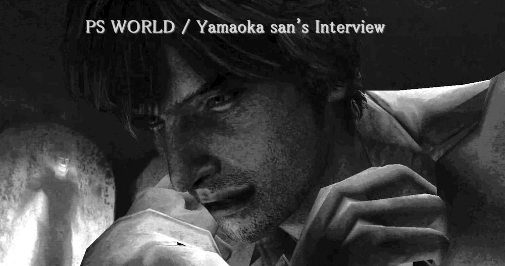
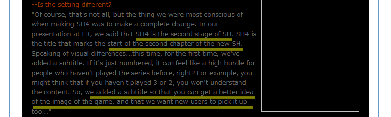
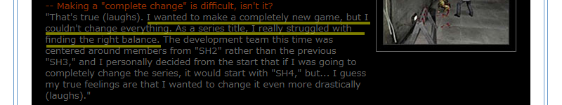
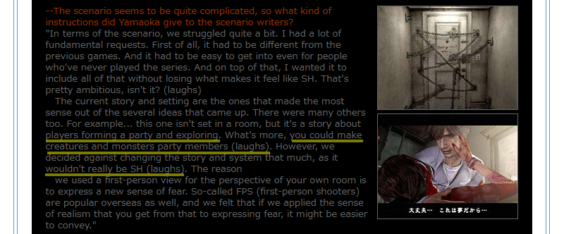
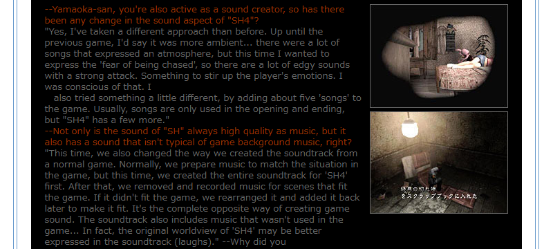
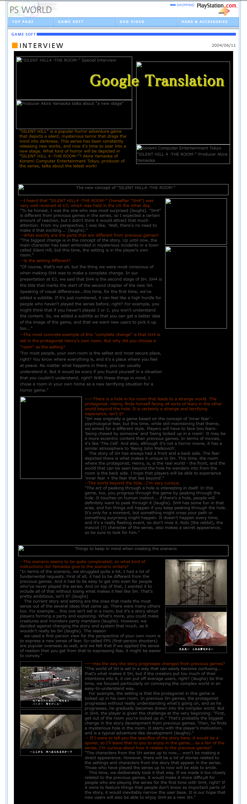
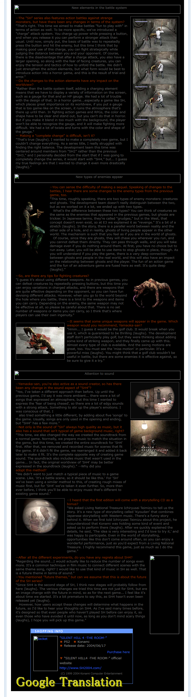

[SH4] Innovation and Series Balance

PS WORLD "SILENT HILL4 -THE ROOM-" Special Interview: Producer Akira Yamaoka talks about "A New Stage"
![[SH4] Innovation and Series Balance](img/da32.png)
This is a mirror of the DeviantArt version linked above, provided as a backup and for easier access.

This time, I'm sharing part of an interview with Yamaoka-san from just before SH4's release, originally on the Japanese PlayStation site "PS WORLD." It's quite long, so definitely check out the full translation if you can.
While SH4 was released in Japan on June 17, 2004, but this interview is from June 11, 2004.
🌐PS WORLD 『SILENT HILL4 -THE ROOM-』スペシャル・インタビュー プロデューサー・山岡晃が語る"新たなるステージ"
From PS WORLD "SILENT HILL4 -THE ROOM-" Special Interview: Producer Akira Yamaoka talks about "A New Stage"
https://web.archive.org/web/20041212072004/http://www.jp.playstation.com/psworld/game/interview/sh4.html
✅ Quote: The most important thing for us when making SH4 was to make a complete change. During our E3 presentation, we said that SH4 marks the second stage of the SH series. It is the title that marks the beginning of the second chapter of the new SH series.

✅ Quote: If we made it too closely related to the previous games, it would make it more difficult for people who are playing the series for the first time with SH4, right? If it were to feature things that people don't know as important parts of the story, it would inevitably narrow the user base. It is our hope that new users will also be able to enjoy SH4 as a new SH series.

Yamaoka-san keeps emphasizing that SH4 is a "new challenge" and the "second stage of the Silent Hill series." He explains that's exactly why the setting, battle system, and enemies are so different this time.
That said, most of it basically expands on what was in the "SH4 Official Guide Complete Edition," just in more detail. Even the reason for adding a subtitle to the game's name for the first time was simply to make it more approachable for newcomers, just like the guide book mentioned.

Also, his repeated statement about "creating a new Silent Hill" aligns with Director Murakoshi-san's comments in "Developer's Voice Vol. 2: The Terror of the Room". Both the producer and the director agree that SH4 was made as a new Silent Hill this time.
Then it's pretty clear that the English-speaking community's theories... like it being a "spin-off" or "originally a separate game" were misinterpretations stemming from mistranslations. As I've written many times before, no such statement exists in their interviews in Japanese.
Personally, this part about the scenario really surprised me:
✅ Quote: One idea had the player forming a party to explore. You could even make creatures or monsters your party members! (laughs). But if we changed things that much, it wouldn't really be SH anymore, so we stopped there (laughs).

Phew, I'm glad they reconsidered...

He also goes into why there are so many track-based songs and why the album includes tracks that didn't even make it into the game.

